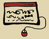

پذيرش > سایت نوشته ها > کاوه کرمانشاهی؛ نماد فعالان مسالمت جوی کردستان /حسن اسدی زیدآبادی در مصاحبه با (...)


 کاوه کرمانشاهی؛ نماد فعالان مسالمت جوی کردستان /حسن اسدی زیدآبادی در مصاحبه با روز کاوه کرمانشاهی؛ نماد فعالان مسالمت جوی کردستان /حسن اسدی زیدآبادی در مصاحبه با روز
5 اردیبهشت 1389 - - نسخه قابل چاپ
بیش از 80 روز از بازداشت کاوه کرمانشاهی، وبلاگ نویس، فعال حقوق بشر و از اعضای ادوار تحکیم وحدت سپری شده و این فعال کرد که در سلول انفرادی نگهداری می شود، اخیرا در ملاقات با خانواده اش اعلام کرده برای پذیرش اتهام "جاسوسی" تحت فشار است. در خصوص علل طرح این اتهام و پیامدهای آن با حسن اسدی زیدآبادی، مسئول کمیته حقوق بشر ادوار تحکیم وحدت گفتگو کرده ایم. او با بیان اینکه "حمایت از کاوه یک مساله وجدانی است" می افزاید:
"عمق فعالیت های فرهنگی و حقوق بشری فعالانی مانند کاوه چنان است که توانایی مقابله را از حاکمیت اقتدارگرا می گیرد". این مصاحبه در پی می آید.
گفته می شود کاوه کرمانشاهی تحت فشارهاست که به جاسوسی اعتراف بکند. فکر می کنید طرح این اتهام با چه هدفی صورت گرفته است؟
متاسفانه تعریف جرم جاسوسی در جریان منازعات سیاسی اخیر به طور کلی دچار دگرگونی شده است. به همین علت این اتهام به طور بی رویه ای به فعالان مدنی و سیاسی وارد می شود بدون آنکه برخی دستگاه ها متوجه معنای حقوقی آن باشند. در واقع یکی از ارکان مهم جاسوسی، دسترسی به اسناد دولتی و اطلاعات ویژه و محرمانه و طبقه بندی شده است. یعنی نوعی نفوذ در ارکان حکومتی؛ امری که مطلقا در مورد فعالان مدنی و سیاسی قابل باور نیست و حتی در اتهامات آنها نیز مطرح نشده است. این یک تناقض آشکار است. در واقع برای قربانی کردن برخی فعالان مدنی و سیاسی چنین سوء استفاده ای از قانون می شود. در مجموع به نظر می رسد چنین اتهامی زمانی وارد می شود که پرونده واقعا خالی باشد و هیچ اتهامی قابل انتساب به متهم نباشد؛به این صورت تلاش می شود سایرین را از دفاع از آن زندانی باز دارند و نوعی پیچیدگی ساختگی به پرونده فرد بدهند.البته در خصوص اتهام جاسوسی باید به سیاست حاکم بر حاکمان فعلی هم اشاره کرد که اساس آن ترس از تعامل با جهان است؛ ترس از تعامل شهروندان و ملت ها با یکدیگر.
بسیاری از فعالان مدنی و مطبوعاتی، اخیرا به طرح این اتهام علیه کاوه کرمانشاهی واکنش نشان داده و آن را محکوم کرده اند. وقتی جامعه اتهامات مطرح شده علیه یک شخص را رد می کند، عملا این فشارها و این اتهامات چه نتیجه ای در بردارد؟
طبیعی است که جامعه، خصوصا افرادی که کاوه را می شناسند و به صحت و سلامت فعالیت های وی واقفند، نمی توانند سکوت کنند. این یک مساله وجدانی است. نمی توان در برابر یک ظلم آشکار و ایراد خدشه به حیثیت یک فعال حقوق بشری خوشنام سکوت کرد. در نهایت، نتیجه چنین اتهام زنی هایی چیزی جز بی اعتباری دستگاه های امنیتی و کاستن از جایگاه و اعتبار قانون نیست؛ به عبارت دیگر به این ترتیب حاکمیت عملا از قباحت جرم جاسوسی می کاهد. یعنی مردم می گویند:اگر فعالیت حقوق بشری جاسوسی است پس این چه جرمی است که نه با عقل همخوانی دارد نه با دین و نه با اخلاق.
اما مسئله اصلی این است که معمولا همین اتهامات مبنای صدور حکم قرار می گیرد. این نگرانی در بین فعالان حقوق بشری وجود دارد که براساس همین اتهام، حکم سنگینی برای کاوه کرمانشاهی صادر شود.
بله متاسفانه این نگرانی در مورد کاوه و بسیاری دیگر وجود دارد، اما قطعا حمایت ها و تشریح عملکرد مثبت و در چارچوب قانون فعالانی مانند کاوه در شفاف شدن وضعیت آنها موثر خواهد بود. یعنی وقتی افکار عمومی متوجه عدم انتساب این جرایم به این متهمان بشود طبعا مجازات هم فلسفه خود را از دست می دهد و تنها جنبه انتقام جویی و تنبیه مجازات باقی می ماند که نوعی اعمال نفرت و کینه توزی حاکمیت نسبت به فعالانی چون کاوه کرمانشاهی است که در تعارض با برخی عملکردهای غیرقانونی و نامشروع حرکت کرده اند.
با توجه به نوع فعالیت های کاوه کرمانشاهی، فکر می کنید برخورد با فعالانی نظیر کاوه چه پیامد هایی خواهد داشت؟
من معتقدم برخورد با کاوه قاسمی هزینه های بسیار بیشتری نسبت به برخورد با یک فعال مرکز نشین دارد. کاوه را می توان نماد نسل فعالان مدنی و مسالمت جوی کرد دانست. جوانانی که در گذشته تاریخی خود سابقه فعالیت های توام با خشونت را دارند، اما بنا به یک تحلیل تاریخی و فرهنگی، مشی مسالمت آمیز و فرهنگی را برای فعالیت هایشان برگزیده اند. این نسل و فعالانی مانند کاوه در تاریخ این مملکت و به ویژه در کردستان در خاطر تاریخ خواهند ماند. همه افرادی که از نزدیک با کاوه آشنا بوده اند تصدیق می کنند که انصاف، وجه بارز تفکر او بود.همچنین مدارا و ارائه تحلیل منطقی به دور از احساسات افراطی از وجوه دیگر و قابل توجه شخصیت کاوه است.شاید بتوان گفت وقتی حاکمیت با فردی مانند کاوه این چنین برخورد می کند، عملا تمایل خود را به رشد فعالیت های غیر مسالمت آمیز در کردستان نشان می دهد. فعالیت هایی که البته سرکوب آنها برای حاکمیت بسیار سهل تراست چرا که از جنس خشونت است، امری که از جنس رفتارهای حاکمیت است و حاکمیت هم آن را به خوبی می شناسد و از میزان اثرگذاری محدود آن هم با خبر است. اما عمق فعالیت های فرهنگی و حقوق بشری فعالانی مانند کاوه آن چنان است که توانایی مقابله را از حاکمیت اقتدارگرا می گیرد و این مهمترین نکته ای است که باید بدان توجه داشت. بنابراین به طور خلاصه می خواهم بگویم بازداشت فردی مانند کاوه کرمانشاهی نشان می دهد که حاکمیت منافع ملی را در منطقه کردستان نمی شناسد و یا در پی آن نیست و اساسا حتی مصلحت خود را هم نمی تواند تشخیص بدهد.
روزآنلاین
ارسال به
بالاترین
،
توییتر
،
فریندفید
،
فیسبوک
در همين بخش :
 یک خبر تلخ؟ یک قانونشکنی؟ یک تصمیم بخشنامهای جدید؟ یک خبر تلخ؟ یک قانونشکنی؟ یک تصمیم بخشنامهای جدید؟
چرا بایست به سکسوالیته پرداخت؟ / نفیسه آزاد
آزارجنسی خانگی؛ «قربانی» نه، «نجات یافته»
زنان، بزرگترین بازندگان بهار عرب
سانسور از دیدگاه جنسیتی/الهه امانی
ديگر بخش ها :
طرح یک میلیون امضا
|
مقالات
|
سایت نوشته ها
|
اخبار
|
گزارش كمپين
|
گفت و گو
|
علیه سکوت
|
كوچه به كوچه
|
نامه های شما
|
گزارش ویژه
|
گفتگو با اعضا
|
ویژه سالگرد کمپین
|
تصویر برابری
|
دل آرام علی
|
تریبون
|
مقالات
|
تاریخ شفاهی
|
خارج از چارچوب
|
کتابخانه
|
درباره کمپین
|
کمپین در شهرها
|
کمپین در بند
|
صدای تغییر
|
ویژه 22 خرداد
|
لایحه حمایت از خانواده
|
گالری
|
عشا مومنی
|
امیر یعقوبعلی
|
خدیجه مقدم
|
راحله عسگری زاده و نسیم خسروی
|
پروین اردلان،جلوه جواهری، مریم حسین خواه، ناهید کشاورز
|
زینب پیغمبرزاده
|
سعیده امین، سارا ایمانیان، محبوبه حسین زاده، ناهید کشاورز و همایون نامی
|
احترام شادفر
|
نسیم سرابندی زاده،فاطمه دهدشتی
|
وبلاگ مهمان
|
پرونده خرم آباد
|
دستگیری ها
|
مریم مالک
|
پرستو اللهیاری
|
مهرنوش اعتمادی
|
سمیه رشیدی
|
Other Languages
|
همراهان
|
«فراخوان کمپین ده روز با بهاره هدایت»
| English
|